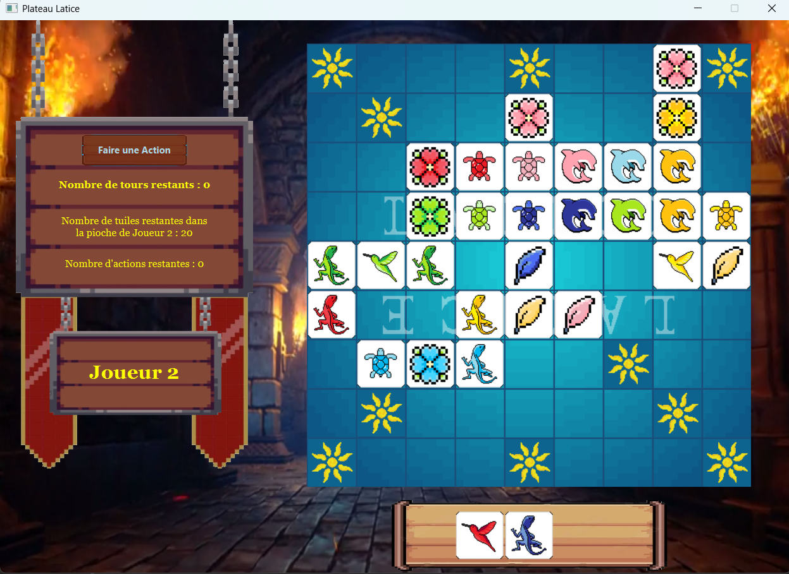

Projet One : Latice

Dans le cadre d'une SAE en 1ère année de BUT Informatique, nous avons recréé le jeu de plateau Latice en Java et JavaFX. L'objectif était de reproduire le fonctionnement du jeu original tout en proposant une interface jouable sur ordinateur.
Voici à quoi ressemble le plateau en fin de partie:
Les joueurs peuvent obtenir des points de différentes manières :
- En plaçant une tuile sur une case soleil (+2 points)
- En plaçant des tuiles là où il y a plus d'une tuile adjacent à la tuile posée:
- 2 tuiles adjacentes : +1 points (s'appelle un double)
- 3 tuiles adjacentes : +2 points (s'appelle un triple)
- 4 tuiles adjacentes : +3 points (s'appelle un latice)
Pendant la partie, les joueurs peuvent éffectuer différentes actions telles que:
- acheter une action (poser une nouvelle tuile)
- Echanger son rack (et passer son tour en même temps)
- passer son tour
- fermer le menu des actions

si un joueur choisit d'acheter dans le menu d'actions, alors un son d'achat se fait entendre
A la fin d'une partie, une fenêtre s'affiche et montre qui a gagné la partie

Quand un joueur gagne, alors un son de victoire se fait entendre
Le jeu contient aussi une musique de fond qui se lance au début de la partie et qui à la moitié des tours éffectué, se change en une musique plus entrainante, montrant que la partie va bientôt se terminer
Le background est une vidéo qui se répète indéfiniment